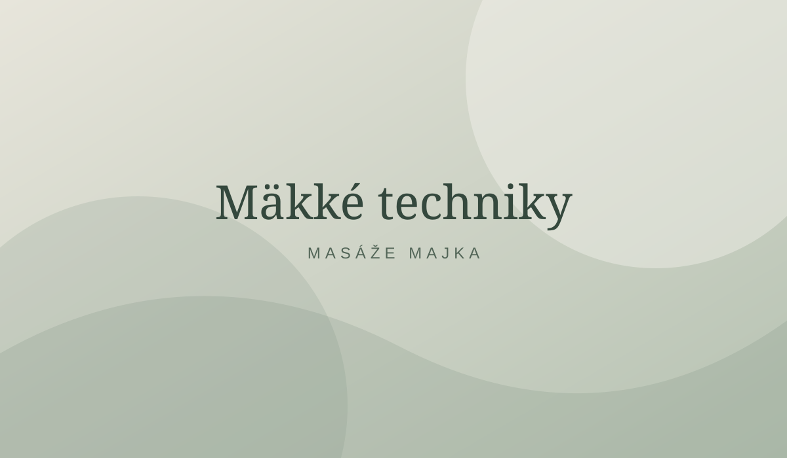

MASÁŽE MAJKA · BLOG
Mäkké techniky: jemná práca s tkanivami

Mäkké techniky predstavujú skupinu manuálnych postupov zameraných na kožu, svaly a ďalšie mäkké tkanivá. Ich cieľom môže byť subjektívna úľava od napätia a pohodlnejší pohyb.
Ako prebieha ošetrenie?
Terapeut volí tlak, smer a rozsah manuálnych techník podľa citlivosti a potrieb klienta. Označenie „mäkké techniky“ zahŕňa viacero postupov, preto nemožno účinnosť všetkých hodnotiť ako jednej identickej metódy.
Čo hovoria vedecké výskumy?
Výskum manuálnych terapií naznačuje, že niektoré postupy môžu krátkodobo znížiť intenzitu muskuloskeletálnej bolesti a zlepšiť subjektívne vnímanie pohybu. Veľký systematický prehľad masážnej terapie z roku 2024 však ukázal, že istota dôkazov je pri väčšine skúmaných indikácií nízka alebo veľmi nízka. Výsledky masážnych štúdií navyše nemožno automaticky prenášať na každú konkrétnu mäkkú techniku.
Kedy postup konzultovať?
Pri akútnom úraze, horúčke, zápale, nevysvetlenej alebo zhoršujúcej sa bolesti a pri závažných ochoreniach sa pred ošetrením poraďte so zdravotníkom. Manuálne techniky sú doplnkom starostlivosti, nie náhradou lekárskej diagnostiky.
Odborné zdroje: JAMA Network Open (2024) – systematický prehľad masážnej terapie pri bolesti; NIH NCCIH – Massage Therapy: What You Need To Know.